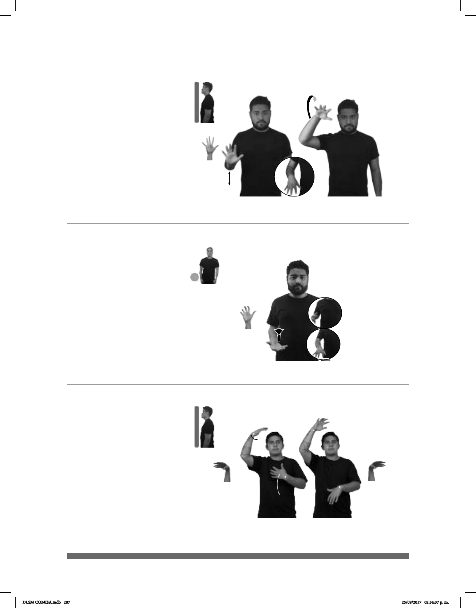

207
Seña: SC: I. y II. SM
I. y II. 5.1
I. La palma inicia hacia afuera y termina
hacia abajo; II. La palma inicia hacia arriba y termina
hacia abajo.
I. A la altura del abdomen; II. Del abdomen
a la cabeza.
I. La mano se mueve de atrás hacia
mueve formando un arco.
1. sust. m. Juego entre dos equipos de cinco
jugadores cada uno, cuyo objetivo es introducir el balón
en la cesta o canasta del contrario, situada a una altura
determinada. 2. v. tr. En el juego del baloncesto,
introducir el balón en el cesto contrario.
pos-MI DEPORTE PREFERIDO BALONCESTO
Mi deporte preferido es el baloncesto.
1
2
(5-G 43)
Seña: SM
5.18
La palma inicia
hacia arriba y termina hacia abajo.
A la altura del
abdomen.
El antebrazo gira y
cambia la orientación de la mano.
País ubicado en el sur
de Asia cuya capital es Daca.
Seña: SB
MD y MB 5.21
MD palma hacia abajo.
MB palma hacia adentro.
MD a la altura de la
cabeza. MB a la altura del pecho.
En la MD y la MB la
muñeca hace girar la mano sin cambiar
su orientación.
v. intr. Sumergir el
cuerpo o parte de él en agua o en otro
o curativos.
(5-G 44)
Bañarse – Ducharse (A) (5-G 45)
____muy
pro-YO CONOCER BANGLADESH YA BONITO VERDAD
Yo conozco Bangladesh, es muy bonito de verdad.
pro--TÚ BAÑAR DIARIO pro-TÚ DEBER PARA LIMPIO BIEN
Tú debes bañarte diariamente para que estés limpio.
DLSM COMISA.indb 207 25/09/2017 02:34:37 p. m.